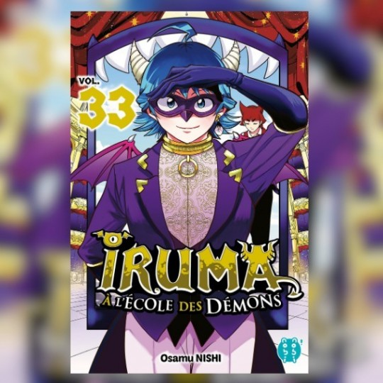
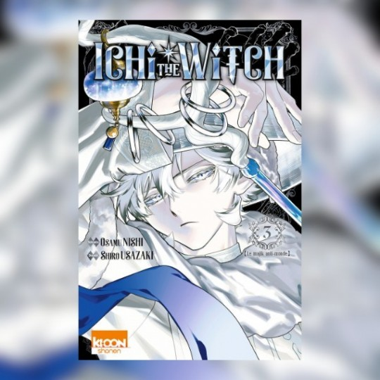

Bienvenue dans votre sanctuaire Manga ✨
Depuis 2026, Sakura Éditions vous accompagne dans votre passion pour la culture japonaise. Que vous soyez fan de Shonen épique, de Seinen profond ou de Shojo touchant, notre catalogue est fait pour vous.
💖 Nos Coups de Cœur du Moment

Iruma à l'école des démons T. 33
Vendu à un démon excentrique par ses parents, le jeune Iruma doit désormais survivre à Babyls, une école de monstres où les humains sont normalement au menu. Bien malgré lui, ce garçon au cœur d'or tente de passer inaperçu tout en s'intégrant à la société démoniaque. Dans ce tome, l'enjeu grimpe d'un cran : Iruma est invité au Debiculum, un prestigieux bal masqué où se côtoient les personnalités les plus puissantes et influentes de l'enfer.

Ichi the witch T.3
Dans un monde où seules les femmes peuvent dompter les majiks — des sortilèges prenant la forme de créatures vivantes —, le jeune Ichi bouscule l'ordre établi. Abandonné en pleine montagne, ce chasseur solitaire survit grâce à un instinct hors du commun. Lorsqu'il terrasse seul le redoutable majik Uroro, il accomplit l'impossible : briser la tradition millénaire pour devenir le premier sorcier de l'Histoire.
🌸 Pourquoi Sakura's ?
+500
Références de mangas
24/7
Planning Animé à jour
100%
Passion Japon